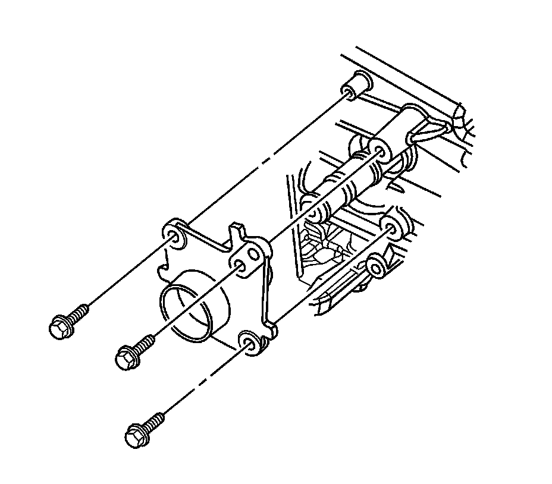
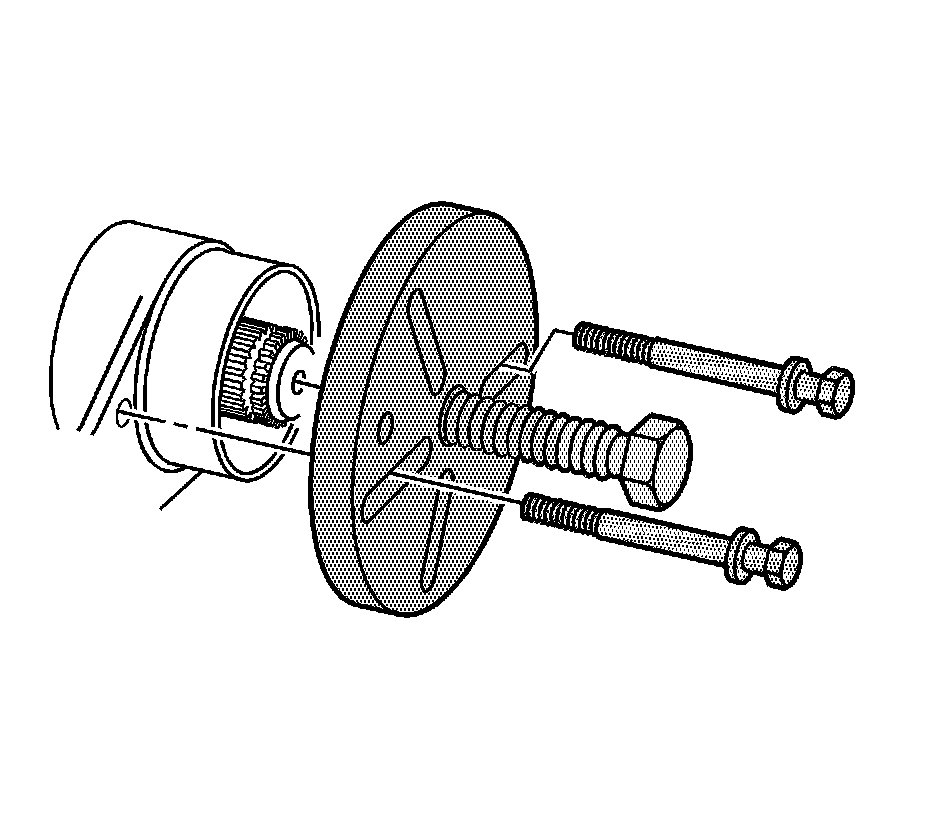
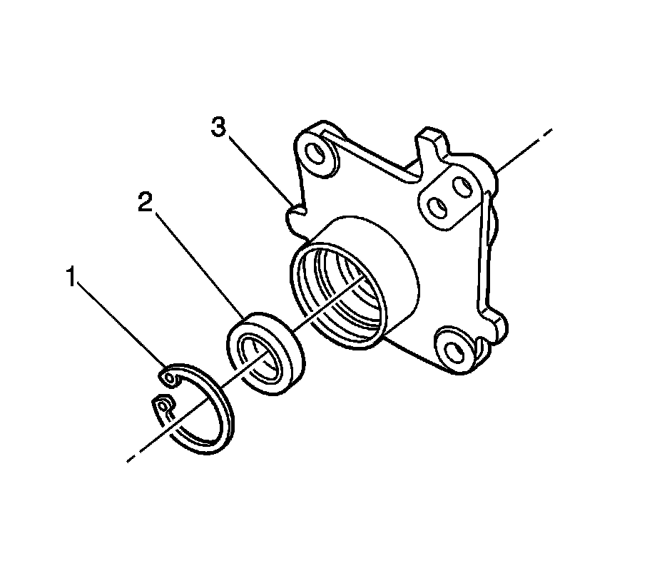

Front Drive Axle Intermediate Shaft Bearing Assembly Replacement
Front Drive Axle Intermediate Shaft Bearing Assembly Replacement
Tools Required
* J 45019 Flange and Pinion Cage Remover
* J 21474-20 Bushing Installer
Removal Procedure
1. Raise and support the vehicle. Refer to Lifting and Jacking the Vehicle (Service and Repair) .
2. Remove the left front tire and wheel assembly. Refer to Tire and Wheel Removal and Installation (Service and Repair) .
3. Remove the left front wheel drive shaft. Refer to Front Wheel Drive Shaft Replacement - Left Side (Front Wheel Drive Shaft Replacement - Left) .

4. Remove and discard the intermediate wheel drive shaft retaining ring (2).
The intermediate wheel drive shaft retaining ring is on the splined end of the shaft.
5. Remove and discard the intermediate wheel drive shaft O-ring (1).
The O-ring is on the splined end of the shaft.

6. Remove the intermediate shaft bearing assembly mounting bolts.

7. Install J 45019 into the threaded holes in the intermediate shaft bearing assembly.
8. Remove the intermediate shaft bearing assembly from the intermediate wheel drive shaft.
9. Remove J 45019 from the intermediate shaft bearing housing.

10. Remove the snap ring (1) from the intermediate shaft bearing housing (3).
11. Using hammer and brass drift carefully separate the intermediate shaft bearing (2) from the intermediate shaft bearing housing (3).
12. Thoroughly clean the intermediate shaft bearing housing using denatured alcohol or equivalent and allow to dry.
13. Inspect the intermediate shaft bearing housing for damage, if damaged replace the intermediate shaft bearing housing.
Installation Procedure
1. Install the intermediate shaft bearing (2) to the intermediate shaft bearing housing (3).
2. Using J 21474-20 , and a hydraulic press fully seat the intermediate shaft bearing (2) to the intermediate shaft bearing housing (3).
3. Install the snap ring (1) into the retaining groove of the bearing housing (3).
4. Install the intermediate shaft bearing assembly to the intermediate wheel drive shaft.
Notice: Refer to Fastener Notice (Fastener Notice) .
5. Install the intermediate shaft bearing housing mounting bolts to the oil pan.
Tighten the intermediate shaft bearing assembly mounting bolts to 60 N.m (44 lb ft).
6. Apply a small amount of grease GM P/N 01051344, (Canadian P/N 993037) to the intermediate wheel drive shaft splines.
7. Install a new O-ring (1) on the intermediate wheel drive shaft.
The intermediate wheel drive shaft O-ring groove is on the splined end of the shaft.
8. Install a new wheel drive shaft retaining ring (2).
The intermediate wheel drive shaft retaining ring groove is on the splined end of the shaft.
9. Install the left front wheel drive shaft. Refer to Front Wheel Drive Shaft Replacement - Left Side (Front Wheel Drive Shaft Replacement - Left) .
10. Install the left tire and wheel assembly. Refer to Tire and Wheel Removal and Installation (Service and Repair) .
11. Lower the vehicle.